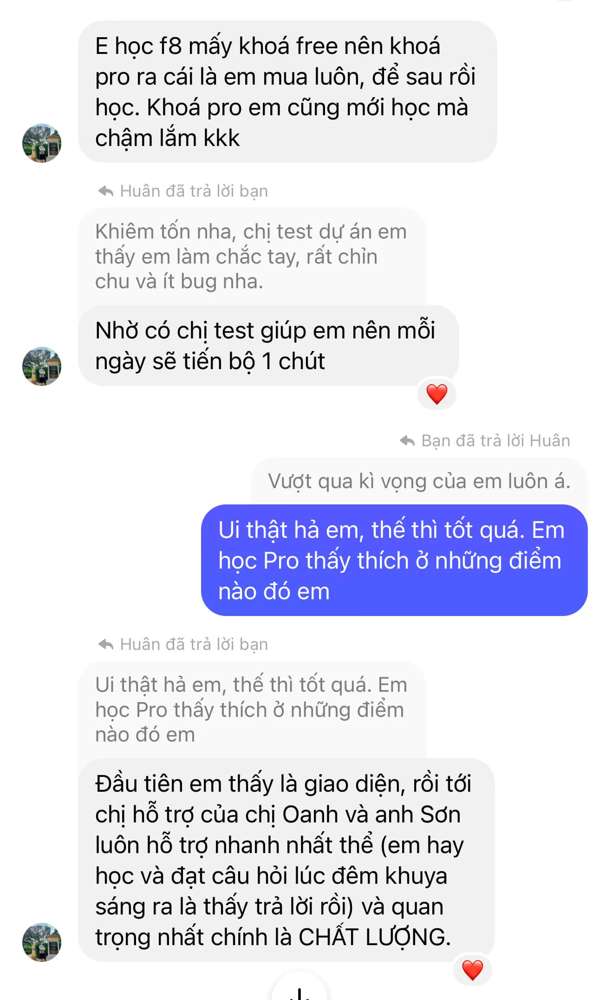

Cách dễ nhất để học HTML/CSS cho người mới bắt đầu!
Thực hành 8 dự án trên Figma, 300+ bài tập và thử thách, mua một lần học mãi mãi, được thiết kế và hướng dẫn bởi Sơn Đặng.
Khoá học này dành cho ai?
Sinh Viên IT Bạn muốn học các kiến thức thực tế ở trường không dạy? Bạn muốn có kiến thức vững chắc để năm sau đi thực tập tại doanh nghiệp?
Người Đã Đi Làm Bạn muốn hiểu sâu sắc về HTML/CSS để nâng cao tay nghề? Bạn đang chuyên Backend giờ chuyển qua làm Frontend?
Người Trái Ngành/Chuyển Nghề Bạn là người mới bắt đầu và đang tìm hiểu về nghề lập trình web? Bạn đang chưa biết bắt đầu từ đâu và cần một lộ trình bài bản?
Bạn sẽ học được những gì?
Hiểu cấu trúc chuẩn HTML
Hiểu rõ về các thẻ Meta
Thuộc tính, thuộc tính toàn cục
Sử dụng liên kết chuyên sâu
Sử dụng Emmet cơ bản
Hiểu rõ tính kế thừa trong CSS
Phân biệt thẻ inline và block
Hiểu Box-model của mỗi phần tử
Hiểu rõ về các đơn vị trong CSS
Kiến thức về Typography
Làm việc với hình ảnh và nền
Thành thạo sử dụng Position
Kỹ thuật sử dụng biến trong CSS
CSS selectors nâng cao (có game)
Đặt tên class theo chuẩn BEM
Biết cách đặt tên class siêu dễ
Thực sự hiểu về Semantic
Sử dụng Flexbox chi tiết (tặng game)
Sử dụng CSS Grid (có game và công cụ)
Forms và validations không cần JavaScript
Kỹ thuật Responsive với Grid System
Tự xây dựng Grid System giống Bootstrap
Sử dụng Animations và tối ưu hiệu năng
Sử dụng Sass và xây dựng Grid System
Hiểu về Web accessibility tư duy tối ưu UX
Hiểu rõ về màu sắc, mã màu thập lục phân
Luyện mắt thẩm mỹ siêu chi tiết qua Quiz
Sử dụng Github đưa trang web lên Internet
Kiến thức SEO cơ bản để SEO-OnPage
Tính hợp lệ của HTML, dùng thẻ chính xác
Tư duy ứng dụng pseudo-classes/elements
Phân biệt các thành phần trên trang web
Cơ chế cache của trình duyệt
CDN là gì và ưu điểm của CDN
Hiểu về mạng LAN và mở web qua LAN
Hiển thị ảnh khi chia sẻ lên Facebook
Tối ưu Pre-connect/phân giải DNS trước
Hiểu đúng cách sử dụng thẻ br, entities
Kỹ thuật giữ đúng tỉ lệ hình ảnh và video
Biết cách ứng dụng đơn vị EM để giữ tỉ lệ
Xây dựng Masonry Layout với CSS Grid
Hướng dẫn đăng ký tên miền và trỏ IP
Các kỹ thuật tối ưu UX trong Form
Hiểu rõ về submit form với GET và POST
Chắc tư duy custom thẻ trong Form
Loại bỏ Tab Highlight và Auto zoom
Nhúng font thủ công với @font-face
Sử dụng Animate.css, Wow.js và AOS
Kỹ thuật sử dụng Steps với Keyframes
Làm dự án thực hành thực tế với Figma
Hiểu về Mobile/Desktop First, Adaptive
Xây dựng Breakpoints cho trang web
Tư duy Typography cho Font Scale
Sử dụng các hàm min(), max(), clamp()
Kỹ thuật tối ưu hình ảnh với SRC-SET
Kỹ thuật 7-1 Pattern khi dùng SCSS
Giới thiệu custom tag (Web components)
Xây dựng Menu đa cấp và Mega Menu
Cách sử dụng robots.txt, sitemap.xml
Cách submit URL trang web lên Google
Cách tạo Favicon cho tất cả các thiết bị
Thực hành dự án số 8 (Multiple Pages)
Thực hành làm Dark/Light mode dự án 8
Tặng bạn thêm 20+ Figma bản trả phí
Bạn sẽ làm được những gì?
Khóa học hướng dẫn bạn thực hành 8 dự án trên Figma. Từ đó, bạn có thể tự làm hầu hết mọi giao diện trang web mà bạn thấy.
Dự án 1: Real Estate Landing Page
Dự án 2: Education Platform Website
Dự án 3: Dental Care Landing Page
Dự án 4: Lucy-Pet Care Landing Page
Dự án 5: Mobile Banking Website
Dự án 6: Arif Personal Portfolio Website
Dự án 7: Podcast Landing Page
Dự án 8: Grocery Ecommerce Website
Không sợ quên kiến thức với Flashcards
Việc ghi nhớ không còn là vấn đề nữa. Flashcards là phương pháp ghi nhớ thông qua việc lặp lại, kiến thức trong khóa học sẽ được bạn ghi nhớ trong dài hạn.
Chỉ với chiếc điện thoại thông minh, giờ đây bạn có thể ôn lại kiến thức ở mọi lúc, mọi nơi.
Phản hồi từ học viên

Người hướng dẫn tận tâm
Sơn Đặng là Founder của Cộng Đồng Học Lập Trình F8. Hiện tại, anh là một Fullstack developer với 10+ năm kinh nghiệm làm việc thực tế.
Các khóa học của Sơn Đặng được yêu thích bởi cách truyền đạt vô cùng dễ hiểu, cách anh tạo động lực cho học viên và sự tận tâm trong từng bài giảng.
*Sơn Đặng đã bỏ ra 1 năm để làm nội dung cho khóa học này!
Tại sao nên học khóa học này?
Khác biệt khóa Free
Khóa học đầy đủ và chi tiết nhất
Thực hành 8 dự án trên Figma
400+ bài học, 300+ bài tập
200+ flashcards, 3+ games
Đáp án cho mọi bài tập
Kênh hỏi đáp riêng tư
Tặng 20+ Figma bản Pro
Nền tảng hàng đầu
Đa dạng loại hình học: Video, Quiz, Testt
Code song song cùng video với Dev Mode
Chạy thử nghiệm ngay với Code Snippet
Chức năng ghi chú Pro hỗ trợ Highlight
Luôn giải thích thuật ngữ chuyên ngành
Có rất nhiều tài liệu chi tiết dễ hiểu
Dark/Light mode cho riêng khóa Pro
Người "thầy" tâm huyết
Bỏ ra 1 năm xây dựng khóa học này
Quay 500+ videos cho khóa này
Soạn 200+ bài viết và 300+ bài tập
Trả lời 2000+ hỏi đáp của học viên
Miễn phí Figma DevMode cho học viên
Rèn luyện giọng nói, kỹ năng giảng dạy
Đầu tư trang thiết bị tốt để quay dựng
Câu hỏi thường gặp
Đối tượng phù hợp
Khóa học này có phù hợp với người hoàn toàn mới?
Khóa học này hoàn toàn phù hợp với người mới, chưa có nền tảng vì được thiết kế bài bản, chú trọng đi từ căn bản nhất tới nâng cao. Luôn hướng tới mục tiêu cung cấp nguồn kiến thức và hướng dẫn chi tiết nhất có thể. Hỗ trợ học viên tận tình, tâm huyết. Từ đó, giúp bạn có động lực học và tiến xa hơn trong quá trình học tập.
Nếu tôi đã học khóa miễn phí thì khóa học này còn phù hợp?
Dù bạn đã học miễn phí thì khóa học này vẫn RẤT cần cho bạn. Trong khóa học đề cập tới rất nhiều kiến thức chuyên sâu mà bình thường không có khóa học nào đề cập tới (bạn có thể vào học thử và xem outline bài học).
Khóa học Pro & Free
Khóa học Pro có gì khác khóa học Free
Điểm khác biệt lớn nhất đó chính là chất lượng và số lượng nội dung. Bạn hãy tin đây là khóa học Pro đầy đủ và chi tiết nhất bạn từng thấy. Khóa học giúp bạn có nền móng cực vững chắc để trở thành nhà phát triển web chuyên nghiệp trong tương lai. Ngoài ra, các bạn sẽ được học trên nền tảng lập trình hoàn toàn mới - nền tảng học lập trình Pro. Chất lượng khóa học được nâng cao, từ hình ảnh, âm thanh, vv. Bài học đa dạng, gồm 7+ dạng bài học khác nhau, bài tập phong phú & đa dạng hơn, được làm dự án thực chiến, được trao đổi trực tiếp với Tester, được hỗ trợ trực tiếp từ đội ngũ kỹ thuật của F8 và rất nhiều quyền lợi khác.
Khóa Free có bị khóa không?
Mở bán khóa Pro, nhưng khóa Free sẽ không bị khóa, luôn được mở và cập nhật thêm kiến thức nên các bạn yên tâm học nhé.
Quyền lợi
Tôi có thể xem video bao nhiêu lần?
Với những video đã học qua, bạn có thể thỏa thích xem lại bất cứ video nào mà bạn muốn, không giới hạn số lần xem video. F8 thậm chí còn khuyến khích bạn xem càng nhiều càng tốt để có thể nắm vững kiến thức hơn bạn nhé.
Tôi có thể học vào thời gian nào?
Bài giảng đã được thiết kế sẵn, nội dung chi tiết và đầy đủ. Chỉ cần có Internet, bạn có thể học bất kỳ lúc nào, bất kỳ nơi đâu. Bạn luôn có thể chủ động thời gian và địa điểm mà không cần lo lắng gì.
Ứng dụng thực tế
Tôi có thể ứng dụng được ngay sau khi học không?
Chắc chắn rồi! F8 luôn hướng tới các bạn học đi đôi với hành. Vì thế, sau mỗi bài học video hoặc văn bản, bạn sẽ được làm rất nhiều bài tập để cô đọng lại kiến thức, nắm vững cú pháp, thậm chí là làm một thử thách code mới. Quan trọng hơn hết, bạn phải làm xong các dự án thực chiến - được thiết kế bằng Figma thì mới hoàn thành khóa học nhé.
Thanh toán
Khi nào thì đơn hàng được duyệt?
Sau khi thanh toán thành công, khóa học sẽ được kích hoạt tự động. Nếu thanh toán bằng MoMo, bạn vui lòng chụp lại bill và gửi qua Fanpage hoặc gọi tới hotline 08 1919 8989 để được hỗ trợ, vì ngân hàng cắt nội dung chuyển khoản nên không thể kích hoạt tự động. Bạn nên giữ lại bill để F8 có thể hỗ trợ nhanh hơn nếu có vấn đề về tài khoản.
Sau thanh toán, khi nào tôi có thể học?
Sau khi F8 nhận được thanh toán từ bạn, khóa học của bạn sẽ được kích hoạt và bạn có thể học ngay sau đó luôn bạn nhé.
Hỗ trợ học viên
Tôi có được hỗ trợ trong quá trình học không?
Tất nhiên rồi! Mặc dù bài tập đã có hướng dẫn, video chữa bài tương ứng và được giải thích chi tiết nhất có thể nhưng nếu bạn gặp khó, bạn không cần lo lắng không biết hỏi ai hay không có người hướng dẫn. Tại mỗi bài học ở F8, bạn luôn có thể đặt câu hỏi, trao đổi và tương tác với các bạn cùng học. Ngoài ra, chuyên viên hỗ trợ F8 sẽ luôn tận tình hướng dẫn nếu bạn gặp khó khăn bạn nhé.
Tôi muốn hỏi thì đăng câu hỏi ở đâu?
Tại mỗi bài học luôn có phần đăng câu hỏi. Bạn chỉ cần đăng câu hỏi mới và chờ câu trả lời của đội ngũ hỗ trợ trong ít phút sau đó. Ngoài ra, ngay chính các học viên trong khóa học cũng có thể tham gia hỗ trợ lẫn nhau nên bạn hãy yên tâm nhé!
Khóa học Offline tại F8
F8 có lớp học offline không?
F8 có lớp offline tại Hà Nội bạn nhé. Ngoài các khóa học online, F8 cũng triển khai đào tạo offline với các mảng Front-end, Back-end, Fullstack. Để nắm chi tiết hơn, bạn hãy đăng ký tư vấn ngay nhé.